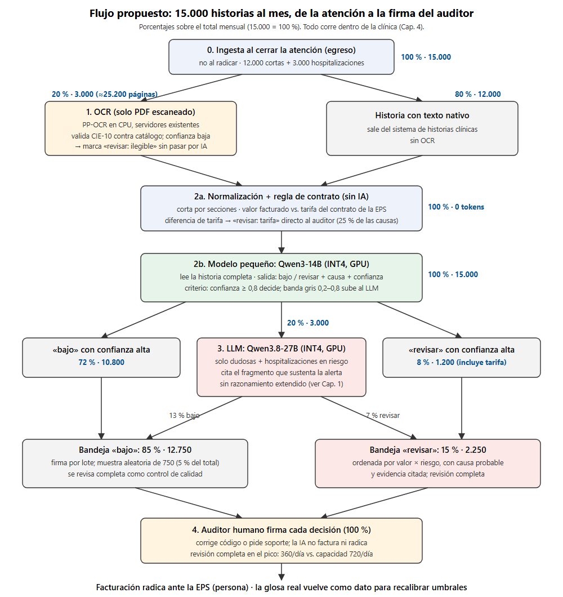
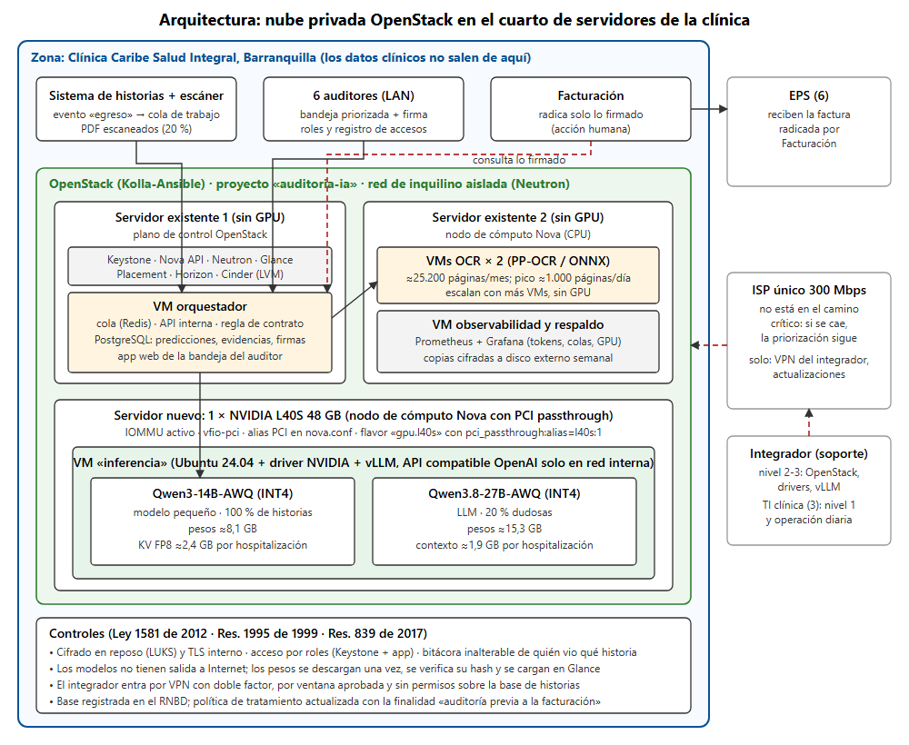

POST /api/clinica/priorizacion del mejor envío (token oculto).Universidad de la Costa (CUC) · Ingeniería de Sistemas
Arquitectura en la Nube · Periodo 2026-2 · Proyecto de Aula, tercer corte (Unidad 3)
Plataforma para priorizar las historias con riesgo de glosa antes de facturar
Clínica Caribe Salud Integral (empresa ficticia)
Camilo Andrés Visbal Beltrán
C.C. 1042247877
Trabajo individual
Equipo registrado en la API de la clínica: visbal-glosas (equipo_id 7)
Docente: Ing. Rodolfo Cañas Cervantes
Barranquilla, noviembre de 2026
La clínica pierde en definitiva el 4 % de lo que factura, [[perdida_mes]] al mes. De esa pérdida, la parte que una IA puede ayudar a evitar es la de código diagnóstico y soporte documental (75 %): [[atacable]] al mes. Se propone una plataforma privada en la propia clínica (OpenStack con una GPU NVIDIA L40S por paso directo a la máquina virtual):
La plataforma procesa [[tok_in_mes]] tokens de entrada y [[tok_out_mes]] de salida al mes. La dimensiona el pico de fin de mes, que es ×[[factor_pico]] frente al día promedio. Cuesta [[onprem_mes]] al mes con soporte externo incluido, más una inversión inicial de [[inversion]]. Con los supuestos del escenario base se recupera en [[meses_base]] meses, y en [[meses_pes]] meses si la IA acierta la mitad. El prototipo, con las 300 historias de la API, logró un F1 de «revisar» de [[f1]] (código de verificación [[codigo]]).
Las observaciones se hicieron antes de elegir modelo o GPU, con los datos de la sección 2 del enunciado y con la muestra de 300 historias de la API. Cada una indica el dato exacto, la consecuencia y la decisión de diseño que cambia; entre paréntesis va la mirada que cubre.
O1. Los auditores «dan abasto» en número de historias, pero no en palabras (qué no cuadra)
Dato: 6 auditores × 120 historias/día = 720 historias/día. Con 22 días hábiles son 15.840 al mes, más que las 15.000 atenciones. Pero el volumen es de 63.000.000 palabras/mes (12.000 × 1.500 + 3.000 × 15.000). Eso da 477.273 palabras por auditor y por día, es decir 31,8 horas de lectura a 250 palabras por minuto. Una sola hospitalización toma 60 minutos de lectura.
Consecuencia: la cifra de 120 historias/día solo es posible si las hospitalizaciones casi no se leen. Sin embargo, son el 20 % de las historias, el 71,4 % del texto y las de mayor valor. El problema no es contar historias sino leerlas.
Decisión: la plataforma no entrega solo una etiqueta. Entrega la causa probable y la cita del fragmento que la sustenta, para que el auditor lea un párrafo y no 15.000 palabras. La bandeja se ordena por valor × riesgo, no por orden de llegada. Por eso la salida del modelo grande se presupuesta en 350 tokens (Cap. 2).
O2. El pico de fin de mes multiplica la carga por 3,6 y desborda a los auditores 2,5 veces (pico de fin de mes)
Dato: el 60 % de la facturación se radica en los últimos 5 días. Si las historias siguen la misma proporción, son 9.000 historias en 5 días, 1.800 por día. El día promedio tiene 500 (15.000 / 30): ×3,6. Frente a la capacidad de 720/día, es ×2,5. En tokens, el día pico trae [[dia_pico_in]] de entrada y [[dia_pico_out]] de salida; el día promedio, [[dia_prom_in]] y [[dia_prom_out]]. La muestra de la API lo confirma: 180 de las 300 historias (60 %) se radicaron entre el 27 y el 31 de octubre de 2026.
Consecuencia: una plataforma dimensionada para el promedio se atasca justo cuando más dinero está en juego.
Decisión: (1) Cada historia se procesa cuando se cierra la atención (egreso), no cuando se radica. Así, en los últimos 5 días la historia ya llega clasificada y el pico se vuelve una cola de firmas. (2) Aun así, el hardware se dimensiona para el pico: [[horas_gpu_pico]] horas de GPU en el día pico (Cap. 3). (3) Los auditores solo revisan completo el 15 % más la muestra de control: 360 historias/día en el pico, por debajo de 720.
O3. Las causas de glosa no dicen sobre qué base están medidas, y una de ellas no está en la historia (qué no cuadra)
Dato: «45 % código CIE-10, 30 % falta de soporte, 25 % tarifas o contratos». El enunciado no dice si son porcentajes de la glosa inicial (10 %) o de la definitiva (4 %), ni si se miden en número de facturas o en pesos. Además, la tarifa no aparece en la historia: la API la entrega aparte (GET /api/clinica/tarifas), y en la muestra 8 de 300 facturas no coinciden con el contrato.
Consecuencia: si el ahorro se calcula sobre la glosa inicial (1.800 millones) se infla 2,5 veces. Y un LLM no puede saber una tarifa que no lee.
Decisión: el ROI (Cap. 5) se calcula solo sobre la pérdida definitiva, que es la base más conservadora: 720 millones × (45 % + 30 %) = [[atacable]]/mes. Las tarifas se resuelven con una regla determinista contra la tabla del contrato, sin tokens, y su ahorro no se suma al de la IA.
O4. La IA detecta la falta de un soporte, pero no lo puede producir (lo que la IA no puede resolver)
Dato: el 30 % de las causas es falta de soporte documental. En la muestra, frases como «se indica electrocardiograma; al cierre de la historia no se anexa resultado ni autorización».
Consecuencia: aunque el modelo acierte, el soporte (orden, resultado, autorización de la EPS) lo tiene que conseguir una persona, y a veces no existe. La IA tampoco firma, no responde ante la EPS y no interpreta un contrato. Esas son responsabilidades del auditor (la gerente: «no quiero que una máquina facture por mí»).
Decisión: la salida es «revisar + causa + evidencia», nunca un código corregido ni una factura. El auditor firma el 100 % de las decisiones. El ROI incluye un factor de corrección: solo el 70 % de lo detectado se alcanza a corregir antes de radicar. Si el OCR sale ilegible, la historia va directo al auditor sin pasar por la IA.
O5. La nube pública implica sacar historias clínicas del país por un único enlace a Internet (riesgo legal y operativo)
Dato: la historia clínica tiene reserva legal (Res. 1995 de 1999) y es dato sensible (Ley 1581 de 2012, art. 5). AWS no tiene región en Colombia: la zona local de Bogotá está anunciada, pero a la fecha de consulta (16-nov-2026) no se encontró confirmación de que esté disponible. La clínica tiene un solo proveedor de Internet de 300 Mbps.
Consecuencia: el ancho de banda no es el problema, porque el texto de un mes ocupa pocos gigabytes. El problema es la disponibilidad: un corte del único enlace durante los 5 días del pico detiene la priorización si la inferencia está afuera. Además, toda historia procesada en AWS es una transmisión internacional de datos sensibles.
Decisión: la ruta elegida es la nube privada OpenStack en la clínica (Cap. 4). El camino crítico no depende del enlace ni de una transferencia internacional; Internet queda solo para el soporte remoto y las actualizaciones.
O6. TI son tres personas sin experiencia en IA, y los dos servidores no tienen GPU (riesgo de capacidad de TI y de costo)
Dato: 2 servidores sin GPU y un equipo de TI de 3 personas sin experiencia en IA. El OCR del prototipo tardó en promedio [[ocr_seg]] s por historia escaneada en un portátil de 2 núcleos (Celeron N4020). La clínica tiene ≈25.200 páginas escaneadas al mes (Cap. 1) y ≈3.000 en el día pico.
Consecuencia: operar OpenStack, controladores de GPU y un servidor de inferencia es un oficio nuevo para ese equipo. Si se cae, nadie lo levanta en el pico. El OCR, en cambio, sí puede correr en CPU.
Decisión: (1) Contrato de soporte con un integrador (nivel 2-3), con costo explícito de COP 10 millones/mes, incluido en el costo y en el ROI. (2) Una sola GPU y una sola máquina virtual de inferencia, instaladas con Kolla-Ansible. (3) Los servidores existentes se reutilizan para el plano de control y para el OCR, no para la IA. (4) TI de la clínica asume el nivel 1 con un manual de operación.
O7. La muestra de la API no tiene el tamaño del caso, y la hospitalización real llena la ventana de contexto (qué no cuadra)
Dato: en la API las hospitalizaciones tienen ≈5.037 palabras (medido); el caso dice ≈15.000. Con el tokenizador del modelo pequeño (Qwen3-14B), una hospitalización real son 15.000 × 1,900 = [[tok_hosp]] tokens; con el del modelo grande (Qwen3.8-27B), 15.000 × 1,723 = [[tok_hosp_q38]]. Con instrucciones y respuesta llega a [[ctx_hosp]] tokens en el modelo pequeño.
Consecuencia: (1) Los tokens del prototipo no se pueden comparar directamente con el Cap. 2 y hay que escalarlos. (2) Muchos modelos pequeños tienen ventanas de 8.000 tokens y no leerían una hospitalización completa. (3) En un modelo denso de 64 capas como Qwen3-32B, la memoria de contexto (KV) de una sola hospitalización sería de ≈7,6 GB en FP16, y en una L40S apenas cabría una a la vez.
Decisión: se eligen modelos con ventana suficiente (Qwen3-14B: 40.960 tokens; Qwen3.8-27B: 262.144). Como LLM se prefiere Qwen3.8-27B, de atención híbrida: solo 16 de sus 64 capas guardan caché KV y la hospitalización le ocupa [[kv27_fp16]] GB. La memoria se dimensiona con la hospitalización del caso, no con la de la muestra.

| Etapa | % / historias-mes | Qué hace | Criterio |
|---|---|---|---|
| 0. Ingesta al egreso | 100 % · 15.000 | El cierre de la atención pone la historia en la cola. | O2: se adelanta el trabajo al pico de radicación. |
| 1. OCR | 20 % · 3.000 | PP-OCR en CPU (servidores existentes). Valida los CIE-10 leídos contra el catálogo. | Solo PDF escaneado (dato de la sección 2). Con confianza baja → auditor directo. |
| 2a. Normalización y regla de contrato | 100 % · 0 tokens | Corta la historia por secciones y compara el valor facturado con la tarifa de la EPS. | O3: la tarifa no está en la historia y una regla es exacta y gratuita. |
| 2b. Modelo pequeño Qwen3-14B | 100 % · 15.000 | Lee la historia completa y devuelve bajo/revisar, causa y confianza. | Confianza ≥ 0,8 → decide. Banda gris 0,2–0,8 → LLM. |
| 3. LLM Qwen3.8-27B | [[frac_llm_pct]] · [[llm_hist]] | Revisa las dudosas y las hospitalizaciones marcadas, y cita la evidencia. | Banda gris (≈10 %) + hospitalizaciones en riesgo (≈10 %): el LLM se reserva para donde la cita le ahorra más lectura al auditor (O1). |
| 4. Auditor | 100 % firma · 15 % revisión completa | Corrige el código o pide el soporte, y firma. Revisa completa una muestra de 750 «bajo». | La IA no factura ni decide. La muestra mide los falsos negativos. |
Los porcentajes salen de dos anclas. Primera: el 10 % de glosa inicial del caso, confirmado en la muestra de la API, donde [[prev_muestra]] de 300 historias (≈[[prev_pct]]) tienen una inconsistencia detectable. Segunda: un margen de falsos positivos que se acepta a propósito. Una historia marcada de más le cuesta al auditor minutos; una glosa no detectada le cuesta a la clínica el valor de la factura. Por eso el sistema marca el 15 % (8 % directo + 7 % desde el LLM) para un riesgo real cercano al 10 %.
Razonamiento extendido: no se usa. La tarea es comparar el código facturado con el cuadro descrito y verificar que cada cargo tenga soporte. Es extracción y contraste, con la evidencia en el texto, no un problema de varios pasos. El razonamiento extendido multiplicaría los tokens de salida (cientos a miles por historia, frente a 350) y la latencia en el pico, sin evidencia de que mejore la decisión, que de todos modos firma un humano. En los modelos Qwen se desactiva explícitamente (modo sin pensamiento).
Cada modelo se mide con su propio tokenizador oficial (tokenizer.json de huggingface.co/Qwen, descargado el 16-nov-2026 y usado con la librería tokenizers): Qwen3-14B (vocabulario de 151.936, idéntico al de toda la familia Qwen3) y Qwen3.8-27B (vocabulario de 248.320). Script: medir_tokens.py; las palabras se cuentan con la misma expresión regular en todos los casos.
| Medición | Palabras | Qwen3-14B tokens/palabra | Qwen3.8-27B tokens/palabra |
|---|---|---|---|
| 12 frases clínicas en español (corpus paralelo propio) | 232 | 1,832 | 1,591 |
| Las mismas 12 frases en inglés | 220 | 1,373 | 1,368 |
| Impuesto del español (tokens ES / tokens EN, mismo contenido) | ×1,41 | ×1,23 | |
| 180 historias cortas reales de la API | 276.242 | 1,985 | 1,811 |
| 60 hospitalizaciones reales de la API | 302.232 | 1,900 | 1,723 |
Para los cálculos se usa la tasa medida sobre las historias de la clínica, no la del corpus paralelo, que es más baja porque la historia real trae códigos, cifras y unidades («134/89 mmHg», «INR 1,0»). El vocabulario más grande de Qwen3.8 reduce el impuesto del español de ×1,41 a ×1,23: el mismo texto le cuesta un 9 % menos de tokens. Si el contenido del mes estuviera en inglés, el modelo pequeño leería [[tok_hist_en]] tokens en lugar de [[tok_hist_mes]].
| Concepto | Cálculo | Resultado |
|---|---|---|
| Tokens de una historia corta | 1.500 palabras × 1,985 | [[tok_corta]] |
| Tokens de una hospitalización | 15.000 palabras × 1,900 | [[tok_hosp]] |
| Texto de historias al mes | 12.000 × [[tok_corta]] + 3.000 × [[tok_hosp]] | [[tok_hist_mes]] |
| Modelo pequeño · entrada | texto del mes + 15.000 × 600 (instrucciones) | [[peq_in]] |
| Modelo pequeño · salida | 15.000 × 60 tokens (JSON: etiqueta, causa, confianza) | [[peq_out]] |
| Texto del mes con el tokenizador del LLM | 12.000 × 1.500 × 1,811 + 3.000 × 15.000 × 1,723 | [[tok_hist_q38]] |
| LLM · entrada | [[frac_llm_pct]] × [[tok_hist_q38]] + [[llm_hist]] × 900 | [[llm_in]] |
| LLM · salida | [[llm_hist]] × 350 tokens (decisión + cita, sin razonamiento extendido) | [[llm_out]] |
| Total entrada / mes | pequeño + LLM (cada uno con su tokenizador) | [[tok_in_mes]] |
| Total salida / mes | pequeño + LLM | [[tok_out_mes]] |
Supuestos: 600 y 900 tokens de instrucciones por llamada, 60 y 350 de salida, y el LLM recibe historias en la misma proporción corta/hospitalización. El prototipo (Cap. 6) usó llamadas más cortas porque solo envía al LLM las secciones relevantes.
| Escenario | Cálculo | Historias/día | Entrada/día | Salida/día | Entrada tokens/s (24 h) |
|---|---|---|---|---|---|
| Día promedio | total / 30 | 500 | [[dia_prom_in]] | [[dia_prom_out]] | [[tps_prom]] |
| Día pico | total × 0,60 / 5 | 1.800 | [[dia_pico_in]] | [[dia_pico_out]] | [[tps_pico]] |
Lo que dimensiona la plataforma es el pico (×[[factor_pico]]): la GPU debe procesar [[dia_pico_in]] de entrada en un día. Aun si la ingesta al egreso (O2) aplana parte de la carga, la radicación del pico exige tener todo clasificado ese día. El promedio sirve para el costo por uso de una API, que cobra por token y no por capacidad.
| Opción | Cálculo (volumen de 2.2) | USD/mes | COP/mes |
|---|---|---|---|
| API: Qwen3-14B + Qwen3.8-27B en OpenRouter | peq: [[peq_in]]×0,12 + [[peq_out]]×0,24; LLM: [[llm_in]]×0,15 + [[llm_out]]×1,875 (USD por millón) | [[api_qwen_usd]] | [[api_qwen_cop]] |
| API: Claude Haiku 5.5 + Sonnet 5.5 en Amazon Bedrock | peq: ×0,10 / ×0,50; LLM: ×2,00 / ×10,00 | [[api_br_usd]] | [[api_br_cop]] |
| GPU alquilada: AWS g6e.xlarge (1 × L40S 48 GB) 24/7 | 1,861 USD/h × 730 h | [[g6e_usd]] | [[g6e_cop]] |
| GPU propia: servidor con 1 × L40S (Cap. 3 y 4) | amortización [[amort]] + energía [[energia]] + soporte del integrador [[soporte]] | — | [[onprem_mes]] |
Inversión de la GPU propia: L40S USD 6.799 + servidor base USD 9.000 (supuesto) = USD [[capex_usd]] = [[capex_cop]], amortizada en 36 meses. Energía: 0,9 kW × 730 h × COP 1.000/kWh (supuesto). TRM: COP 3.300/USD.
Lectura honesta: con este volumen, la API es mucho más barata. Para que la GPU propia (sin el soporte) iguale a la API de Qwen se necesitarían [[cruce]] tokens al mes, unas [[cruce_veces]] veces el volumen actual. Si el único criterio fuera el costo, la respuesta sería la API. El Capítulo 4 explica por qué se paga la diferencia ([[prima]] al mes, el [[prima_pct]] del ahorro neto del escenario base): ley, dependencia del enlace y capacidad de TI. La comparación se hizo con el mismo volumen de tokens para todas las opciones.
Arquitectura tomada de los config.json oficiales (16-nov-2026). Qwen3-14B: 40 capas de atención completa, 8 cabezas KV, dimensión 128. Qwen3.8-27B: 64 capas, de las que solo 16 (una de cada cuatro) son de atención completa con 4 cabezas KV de dimensión 256; las otras 48 son de atención lineal y guardan un estado fijo por historia (48 capas × 48 cabezas × 128 × 128 × 4 bytes = 0,15 GB), sin importar su longitud. Pesos = parámetros × bytes por parámetro; en INT8/INT4 se suma un 10 % por escalas y capas sin cuantizar. KV por token = 2 (K y V) × capas con atención completa × cabezas KV × dimensión × 2 bytes (FP16).
| Modelo | BF16 | INT8/FP8 | INT4 (AWQ) | KV por token (FP16) | Contexto de una hospitalización |
|---|---|---|---|---|---|
| Qwen3-14B (14,8 B) | [[m14_bf16]] GB | [[m14_int8]] GB | [[m14_int4]] GB | 2×40×8×128×2 = 163.840 B | [[ctx_hosp]] tokens: [[kv14_fp16]] GB (FP8: [[kv14_fp8]] GB) |
| Qwen3.8-27B (27,8 B) | [[m27_bf16]] GB | [[m27_int8]] GB | [[m27_int4]] GB | 2×16×4×256×2 = 65.536 B | [[ctx_hosp27]] tokens: [[kv27_fp16]] GB (FP8: [[kv27_fp8]] GB), estado lineal incluido |
Presupuesto en una L40S de 48 GB: pesos INT4 de ambos = [[pesos_total]] GB; reserva del 10 % para activaciones y fragmentación = [[reserva]] GB; quedan [[libre_kv]] GB para KV, repartidos mitad y mitad. Con la caché KV en FP16 caben [[sim27_fp16]] hospitalizaciones simultáneas en el LLM y [[sim14_fp16]] en el modelo pequeño; con KV en FP8, [[sim27]] y [[sim14]] (las historias cortas ocupan 10 veces menos). Se usa KV FP8 en el modelo pequeño, que lee el 100 % de las historias y es el que más contexto acumula en el pico.
Rendimiento suficiente: en la lectura del prompt (prefill) se gastan unos 2 FLOP por parámetro y por token. La L40S entrega 362 TFLOPS densos en FP16 (hoja de datos de NVIDIA); con una utilización efectiva supuesta del 35 %, son ≈[[pf14]] tokens/s en el 14B y ≈[[pf27]] en el 27B. El día pico pide [[horas_gpu_pico]] horas de GPU, holgado dentro de 24 h, de modo que una sola tarjeta basta y queda margen para crecer.
Al bajar de 16 a 4 bits cada peso se representa con 16 niveles en lugar de 65.536. Se pierde precisión fina y la pérdida se nota en razonamientos largos de varios pasos y en textos generados extensos. AWQ protege el ≈1 % de canales más importantes y retiene más del 99 % de la exactitud en MMLU frente a FP16 (Lin et al., MLSys 2024, material S15). Es aceptable para auditar por tres razones: (1) la tarea es clasificar y citar un fragmento que ya está en el texto, no crear contenido; (2) cada decisión la firma un auditor y la muestra de control de 750 «bajo» al mes mide si la calidad cae; (3) la alternativa de mayor precisión casi no deja memoria: el LLM en FP8 oficial (Qwen/Qwen3.8-27B-FP8, [[m27_int8]] GB) más el 14B en INT4 ([[m14_int4]] GB) dejan solo [[libre_fp8]] GB para contexto, menos de dos hospitalizaciones a la vez entre los dos modelos. Si la muestra de control mostrara más falsos negativos, la primera palanca sería subir el 14B a INT8 ([[m14_int8]] GB), que sí cabe.
| Opción | Memoria | Veredicto |
|---|---|---|
| NVIDIA L4 (AWS g6.xlarge) | 24 GB | No alcanza: [[pesos_total]] GB solo de pesos INT4 para los dos modelos, sin espacio para el contexto. |
| NVIDIA L40S (AWS g6e.xlarge) | 48 GB GDDR6 | Elegida. Los dos modelos en INT4 + KV FP8 en una tarjeta PCIe pasiva para servidor. USD 6.799 nueva (gpudojo, 16-nov-2026). |
| NVIDIA A100 80 GB / H100 80 GB | 80 GB HBM | Sobredimensionada para [[horas_gpu_pico]] h de GPU en el día pico; varias veces el precio. |
¿Sirven los 2 servidores existentes? Para la IA, no. No tienen GPU, y una L40S pasiva de 350 W necesita un chasis certificado con el flujo de aire, la fuente y la ranura PCIe x16 de doble ancho adecuados (supuesto: no se conoce el modelo exacto, verificarlo antes de comprar). En CPU, un modelo de 14B tardaría varias veces más que las 24 horas del día pico. Sí sirven para todo lo demás: el plano de control de OpenStack, el orquestador, la base de datos y el OCR, que corre bien en CPU (O6). Se compra un servidor nuevo certificado para GPU.
Decisión: nube privada OpenStack en la clínica, con la GPU por paso directo (PCI passthrough) a la máquina virtual de inferencia.

| Eje | OpenStack en la clínica (elegida) | AWS (descartada) |
|---|---|---|
| Costo | [[onprem_mes]]/mes con soporte + inversión de [[inversion]]. Es más caro, pero equivale al [[prima_pct]] del ahorro neto base y se recupera en [[meses_base]] meses. | Bedrock: [[api_br_cop]]/mes; GPU g6e 24/7: [[g6e_cop]]/mes. Más barato, pero exige un segundo ISP y asesoría legal para la transmisión internacional (no cuantificados). |
| Operación | Más difícil: 3 personas sin IA. Se mitiga con un integrador (nivel 2-3), una sola GPU y una sola VM, Kolla-Ansible y un manual de operación. Si cae Internet, la priorización sigue. | Más simple de operar (servicio gestionado). Pero el camino crítico depende de un único enlace de 300 Mbps justo en los 5 días del pico (O5). |
| Ley | Los datos no salen de Colombia ni de la custodia del prestador (Res. 1995 de 1999 y Res. 839 de 2017). No hay transferencia ni transmisión internacional. | No hay región de AWS en Colombia: cada historia sería una transmisión internacional de datos sensibles. Es posible a EE. UU., pero necesita contrato de transmisión, autorización y una evaluación de proporcionalidad difícil de defender cuando existe una alternativa local. |
Aplican con la ruta elegida:
No aplican con esta ruta (sí con AWS): la transferencia o transmisión internacional (Ley 1581, art. 26; Circular Externa 005 de 2017 de la SIC, que incluye a EE. UU. entre los países con nivel adecuado; contrato de transmisión con AWS como encargado). Habrían sido obligatorias al elegir cualquier región de AWS.
Supuesto declarado: el integrador de soporte accede a la infraestructura, no a los datos. Si en algún caso tuviera que ver historias, sería un encargado del tratamiento y necesitaría un contrato de transmisión nacional con cláusulas de confidencialidad. Este documento no reemplaza la revisión del área jurídica de la clínica.
| Tarea | TI de la clínica (3) | Integrador | Auditores |
|---|---|---|---|
| Instalación de OpenStack, GPU passthrough y vLLM | acompaña | responsable | — |
| Operación diaria: colas, respaldos, usuarios, tablero | responsable (manual de operación) | escalamiento | — |
| Actualizaciones de OpenStack, controladores y modelos | aprueba la ventana | responsable | — |
| Umbrales y muestra de control | ejecuta | asesora | responsables (miden falsos negativos) |
| Firma de cada decisión | — | — | responsables |
Configuración clave del passthrough: IOMMU activo en el BIOS y en el kernel; la L40S ligada a vfio-pci; [pci] alias y device_spec en nova.conf; filtro PciPassthroughFilter en el planificador, y un flavor con pci_passthrough:alias=l40s:1 (temas de S12–S13).
| Concepto | Cálculo | COP/mes |
|---|---|---|
| Glosa inicial (no es la base del ROI) | 18.000 M × 10 % | [[glosa_inicial]] |
| Pérdida definitiva | 18.000 M × 4 % | [[perdida_mes]] |
| (−) Tarifas o contratos: regla, no IA | [[perdida_mes]] × 25 % | [[perdida_tarifa]] |
| Pérdida atacable por la IA | [[perdida_mes]] × (45 % + 30 %) | [[atacable]] |
| Escenario | Ahorro bruto | Ahorro/mes | Costo/mes | Neto/mes | % de la pérdida total | Recuperación |
|---|---|---|---|---|---|---|
| Base | [[atacable]] × 60 % × 70 % | [[ahorro_base]] | [[onprem_mes]] | [[neto_base]] | [[pct_base]] | [[meses_base]] meses |
| Pesimista | [[atacable]] × 30 % × 70 % | [[ahorro_pes]] | [[onprem_mes]] | [[neto_pes]] | [[pct_pes]] | [[meses_pes]] meses |
Recuperación = inversión inicial / ahorro neto mensual. Incluso en el escenario pesimista, la pérdida definitiva baja solo un [[pct_pes]]; nunca se promete eliminar las glosas. Punto de equilibrio: la plataforma cubre su costo mensual si la IA detecta al menos el [[det_min]] de los errores atacables (costo / (atacable × 70 %)). La conclusión no depende de que el modelo sea excelente, sino de que los auditores revisen primero lo que tiene riesgo. Es exactamente lo que pidió la gerente.
Riesgos para el ROI: puesta en marcha de 2–3 meses con detección menor (no modelado; el pesimista lo cubre); que el 45/30 % esté medido en número de facturas y no en pesos (O3); y que la muestra de control revele una tasa de falsos negativos mayor que la supuesta.
Equipo registrado: visbal-glosas (equipo_id 7, registrado una sola vez el 16-nov-2026 con POST /api/clinica/equipos). El token se guarda fuera del repositorio y no aparece en el código ni en las capturas. Repositorio público con el código: [[enlace_repo]] (el prototipo está en la carpeta prototipo/; el README explica cómo correrlo).
| Etapa | Implementación en el prototipo | Historias |
|---|---|---|
| Descarga | descargar.py: lista paginada, detalle, imagen de las escaneadas y GET /tarifas. | 300 |
| 1. OCR | ocr.py: RapidOCR (PP-OCR sobre ONNX Runtime, solo CPU). Confianza media [[ocr_conf]], [[ocr_seg]] s por imagen. | 60 |
| 2a. Regla de contrato | Valor facturado vs. tarifa de la EPS para el procedimiento. | 300 |
| 2b. Modelo pequeño | Modelo local en CPU: perfil TF-IDF del cuadro clínico por código CIE-10 (centroides aprendidos de la propia muestra, sin etiquetas), lectura de la sección de diagnóstico tolerante al OCR y detector de soportes negados. Devuelve bajo / revisar / dudosa. | [[p_peq]] |
| 3. LLM | [[llm_desc]] | [[p_llm]] |
| Envío | enviar.py: las 300 predicciones juntas con los tokens reales; registra cada envío en envios.log. | 300 |
Diferencia declarada con el diseño: en producción el modelo pequeño es Qwen3-14B en GPU. El prototipo corre en un portátil sin GPU, así que esa etapa se reemplazó por un modelo pequeño estadístico local que cumple el mismo contrato de entrada y salida. Los tokens de esa etapa se declaran como los que Qwen3-14B leería: el texto completo de cada historia, contado con su tokenizador.
| Campo | Valor |
|---|---|
| Código de verificación | [[codigo]] |
| envio_id | [[envio_id]] |
| recibido_en | [[recibido_en]] |
| Precisión / recall / F1 de «revisar» | [[precision]] / [[recall]] / [[f1]] |
| Tokens declarados (entrada / salida) | [[decl_in]] / [[decl_out]] |
| Historias marcadas «revisar» | [[n_revisar]] de 300 |
POST /api/clinica/priorizacion del mejor envío (token oculto).| Variable | Valor | Origen |
|---|---|---|
| Tokens/palabra (corta / hospitalización) | 1,985 / 1,900 (14B) · 1,811 / 1,723 (27B) | Medido con el tokenizador de cada modelo, historias de la API |
| Impuesto del español | ×1,41 (14B) · ×1,23 (27B) | Medido, corpus paralelo |
| Entrada / salida al mes | [[tok_in_mes]] / [[tok_out_mes]] | Cap. 2.2 |
| Entrada / salida en el día promedio | [[dia_prom_in]] / [[dia_prom_out]] | Cap. 2.3 |
| Entrada / salida en el día pico | [[dia_pico_in]] / [[dia_pico_out]] | Cap. 2.3 (dimensiona) |
| Memoria: pesos INT4 de los dos modelos | [[pesos_total]] GB | Cap. 3.1 |
| Contexto de una hospitalización en el LLM (FP16 / FP8) | [[kv27_fp16]] / [[kv27_fp8]] GB | Cap. 3.1 |
| Horas de GPU en el día pico | [[horas_gpu_pico]] | Cap. 3.1 (supuesto: 35 % de utilización) |
| Costo API (Qwen / Bedrock) | [[api_qwen_cop]] / [[api_br_cop]] | Cap. 2.4 |
| Costo de la plataforma elegida | [[onprem_mes]] | Cap. 2.4 (usado en el Cap. 5) |
| Inversión inicial | [[inversion]] | Cap. 5.2 |
| Pérdida atacable | [[atacable]] | Cap. 5.1 |
| Ahorro neto base / pesimista | [[neto_base]] / [[neto_pes]] | Cap. 5.3 |
| Recuperación base / pesimista | [[meses_base]] / [[meses_pes]] meses | Cap. 5.3 |
Todo se recalcula con python calculos.py (genera calculos.json); este informe toma de ahí cada cifra para que los capítulos 2, 3 y 5 no se contradigan.
[[declaracion_ia]]